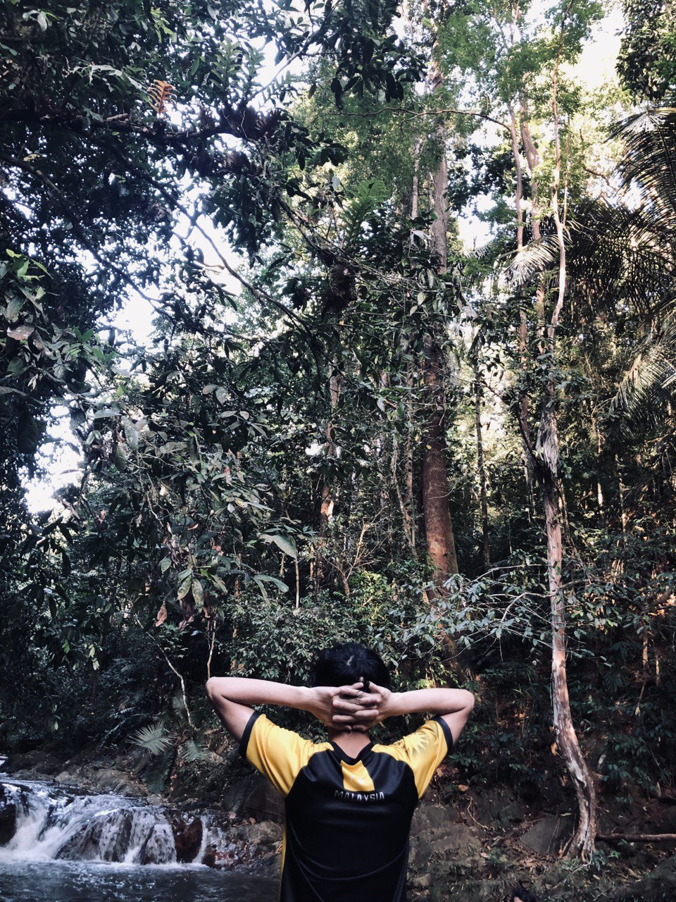

| Home | About Me | My Friend | My Family | My Hobby | My Education |
My Hobby
Nature and Sport are the part of my life
Here is my hobby:

Location : LATA MENGKUANG SIK KEDAH
My first hobby was exploring nature.I really love nature because I consider that nature as therapy for myself. I love visiting waterfall recreation places. I love to explore nature so that I can feel the challenge and be able to see the beauty of nature. For example, Lata Mengkuang is located in Sik Kedah. This picture was taken when I was at the top of the waterfall.
My second hobby is playing badminton. Badminton is a game that I really like. I started playing badminton at the age of 7 until now. When I have free time I will play badminton with my friends on the weekends. I love badminton because it is a very popular sport and keeps the body healthy by producing a lot of sweat. The video above shows me playing with my friends on the weekends.